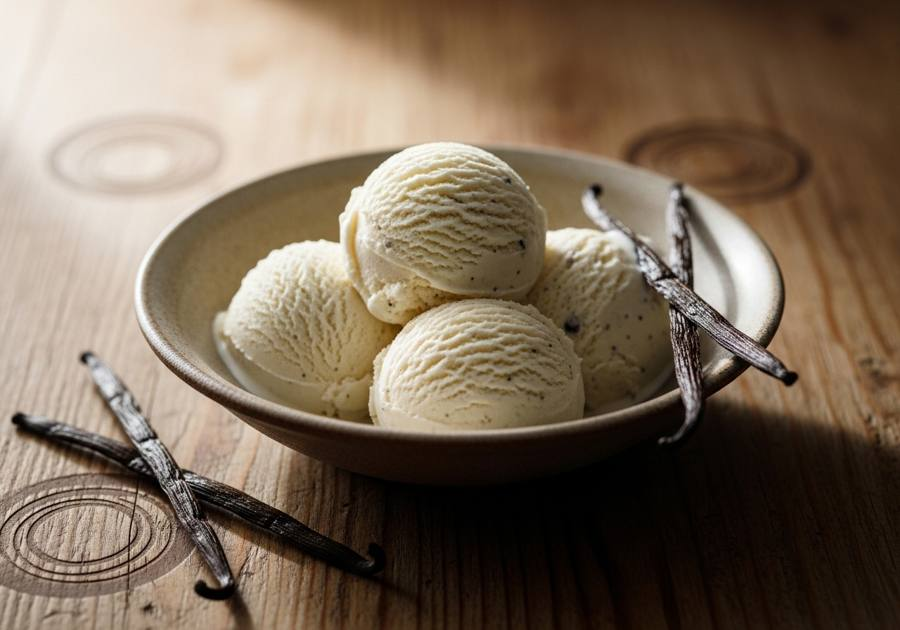

← Alle recepten

🍽 1 pint (4 porties)
⏱ Voorbereiding: 10 min
🔥 Bereiding: 24 uur
Σ Totaal: 24 uur 10 min
Ingrediënten
- 240 ml volle melk
- 180 ml slagroom
- 65 g kristalsuiker
- 2 tl vanille-extract
- Snufje zout
Bereiding
- Klop melk, slagroom en suiker in een kom tot de suiker volledig is opgelost.
- Roer het vanille-extract en zout erdoor.
- Giet het mengsel in de Creami-pint tot maximaal de vullijn en vries minimaal 24 uur plat en waterpas in.
- Draai het ijs op de stand Ice Cream. Kruimelig? Draai nogmaals met Re-spin tot het romig is.
Bron: Cooked & Loved